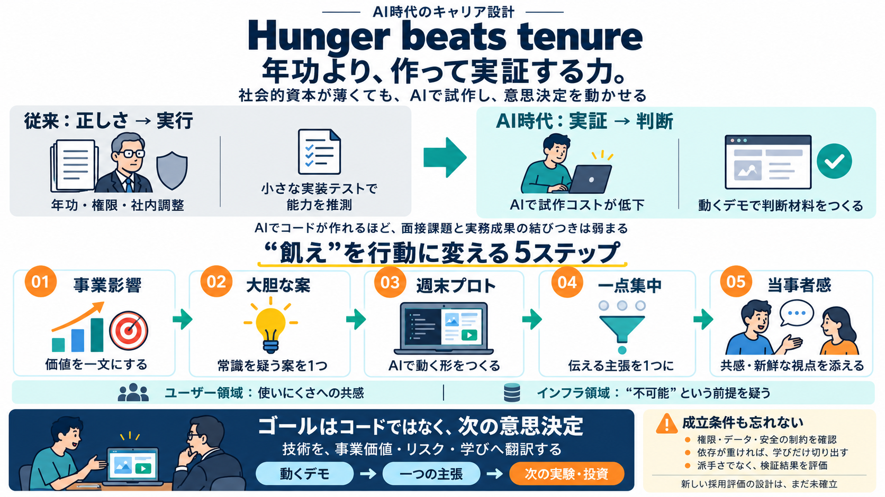

Anthropic Manager Drops the Coding Interview for His Team | CellCog
Rieseberg reads the same trend the other way. “Plenty of ink has been spilled to describe how AI is a challenge for juni…

Rieseberg reads the same trend the other way. “Plenty of ink has been spilled to describe how AI is a challenge for juni…
Pick a radical idea. Generate a few ideas that would, if they worked, dramatically improve the odds that the organizatio…
### Description 34,268 views Posted: 2026-10-19 Felix Rieseberg, engineering manager at Anthropic, discusses the philoso…
Posted: 2026-05-25 Felix Rieseberg is the engineering lead for Claude Cowork and Claude Code Desktop at Anthropic. He pr…
[25:07] certain tasks which are going to be increasingly important to me and my work life in a way that's going to make …